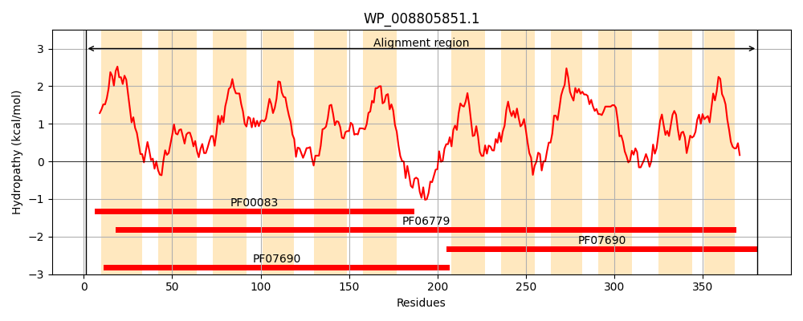
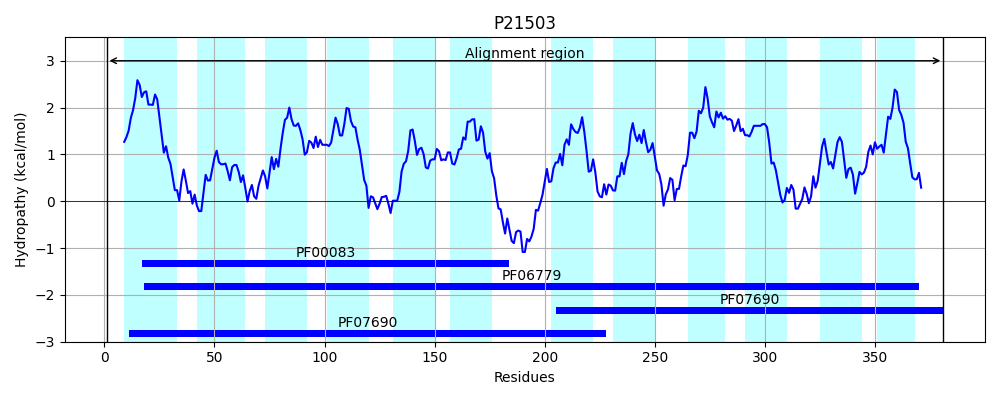
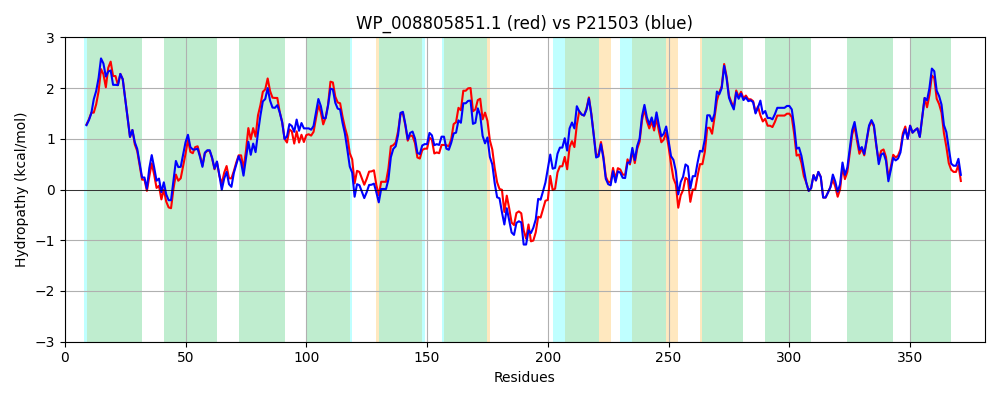

Hit Accession: P21503
Hit TCID: 2.A.1.26.1
Hit Description: gnl|BL_ORD_ID|9361 gnl|TC-DB|P21503|2.A.1.26.1 Hypothetical 41.4 kDa protein IN DMSC-PFLA intergenic region (ORF Y) - Escherichia coli.
Mach Len: 381
e:0.000000
Query TMS Count : 12
Hit TMS Count: 12
TMS-Overlap Score: 11.500000
Predicted Substrates:None
BLAST Alignment:
Score: 1659 , Bit scores: 643 bits, E-value: 0.0e+00, Alignment length: 381, Percentage identity: 83
Query: 1 MTIYTRPVQMLLCGLLLLTLAIAVLNTLVPLWLAHENMPTWQVGMVGSSYFTGNLAGTLLAGWVIKRLGFNRSYYLASLIFAVGCVGLGITVGFWTWLSWRFIAGVGCAMIWVVVESALVCSGTSRSRGRLLAAYMMVYYVGTVLGQLMVSKLPTDLMSVLPWVTGLALAAILPLLFTRIMGQAEEPHETVRIWPMLKLRQARHGVNGCIISGIVLGSLYGLMPLWLNHQGVSDAGIGFWMAVMVSAGILGQWPVGRLADRYGRLLVLRVQVFVVILGCMAMLSQAAMAPALFVLGASGFTLYPVAMAWACEKVEHHQLVAMNQALLMSYTIGSLLGPTLTAMLMQNFSDNLLFIMIASVSFIYLLTLLRKAGHHPTPVAH 381
M+ YT+PV +LL GLLLLTLAIAVLNTLVPLWLA E+M TWQVG+V SSYFTGNL GTLL G+VIKR+GFNRSYYLAS IFA GC GLG+ +GFW+WL+WRF+AGVGCAMIWVVVESAL+CSGTSR+RGRLLAAYMMVYYVGT LGQL+VSK+ T+LMSVLPWVTGL LA ILPLLFTR++ Q E H++ I MLKLRQAR GVNGCIISGIVLGSLYGLMPL+LNH+GVS+A IGFWMAV+VSAGILGQWP+GRLAD++GRLLVLRVQVFVVILG +AMLSQAAMAPALF+LGA+GFTLYPVAMAWACEKVEHHQLVAMNQALL+SYT+GSLLGP+ TAMLMQNFSDNLLFIMIASVSFIYLL LLR AGH P PVAH
Sbjct: 1 MSTYTQPVMLLLSGLLLLTLAIAVLNTLVPLWLAQEHMSTWQVGVVSSSYFTGNLVGTLLTGYVIKRIGFNRSYYLASFIFAAGCAGLGLMIGFWSWLAWRFVAGVGCAMIWVVVESALMCSGTSRNRGRLLAAYMMVYYVGTFLGQLLVSKVSTELMSVLPWVTGLTLAGILPLLFTRVLNQQAENHDSTSITSMLKLRQARLGVNGCIISGIVLGSLYGLMPLYLNHKGVSNASIGFWMAVLVSAGILGQWPIGRLADKFGRLLVLRVQVFVVILGSIAMLSQAAMAPALFILGAAGFTLYPVAMAWACEKVEHHQLVAMNQALLLSYTVGSLLGPSFTAMLMQNFSDNLLFIMIASVSFIYLLMLLRNAGHTPKPVAH 381 | Protein Hydropathy Plots: |
|---|
|  |  |
Pairwise Alignment-Hydropathy Plot:
|
|---|
|  |